耳朵
用头发手绘组做猫耳、兔耳和一上一下的垂耳
成品是头发，不是脸部耳朵滑杆
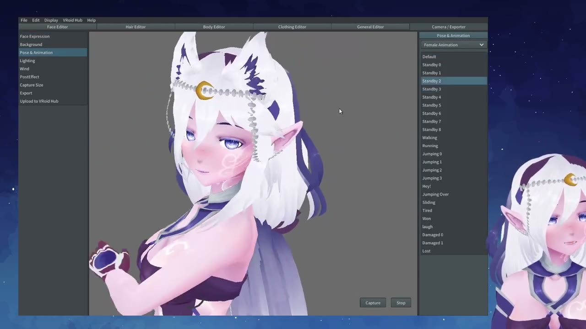
标题栏和菜单里都没有版本号。顶上是 File、Edit、Display、VRoid Hub、Help。编辑页是 Face Editor、Hair Editor、Body Editor、Clothing Editor、General Editor、Camera / Exporter。这是这条 2021 年视频里的英文界面。
整条都没有打开脸部的耳朵参数。脸两侧那对尖耳从头到尾都在，是模型原来的耳朵。头顶的猫耳、后面的兔耳和一上一下的垂耳，都是 Hair Editor 里画出来的发丝。口播说今天做几种耳朵，只把第一种讲完，后面两种加速，但还能跟着做。口播还说用的是自己改过的模型。
猫耳
先开一组 Freehand，把框摆到头顶
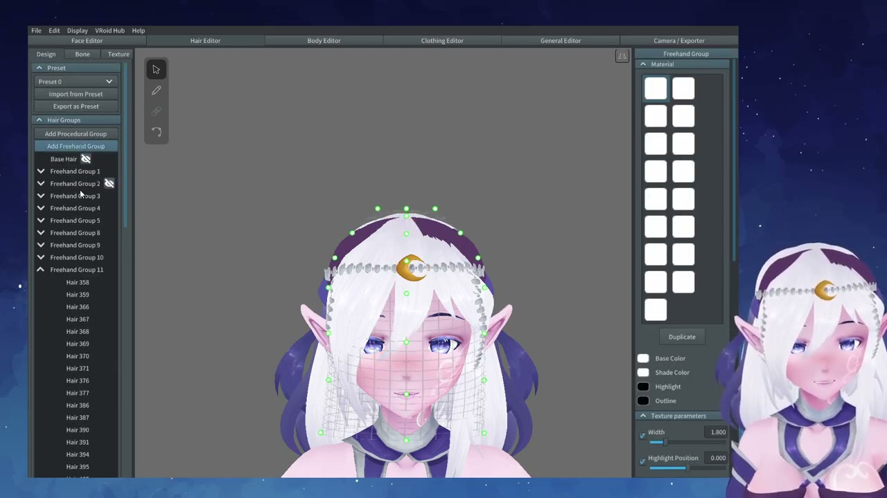
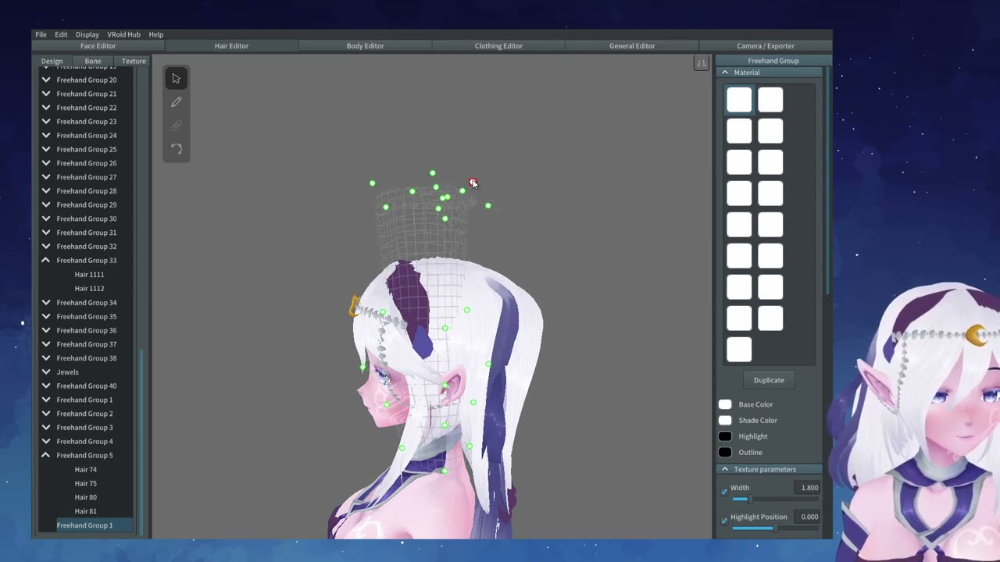
口播的第一步是 create a freehand group，点的是 Add Freehand Group。新的一圈绿点在头顶上方，像侧面那张，整圈抬离发带。正面那张脸上的绿点是原来的头发组，不是这圈新框。拖新框：多大，耳朵就有多大；放在哪，耳朵就长在哪。口播说大小和位置都自己试。口播还说，挪 Freehand Group 的框时形状会跟着歪，歪了就再修一笔。
对称打开，毛宽收细，再补两侧绒毛
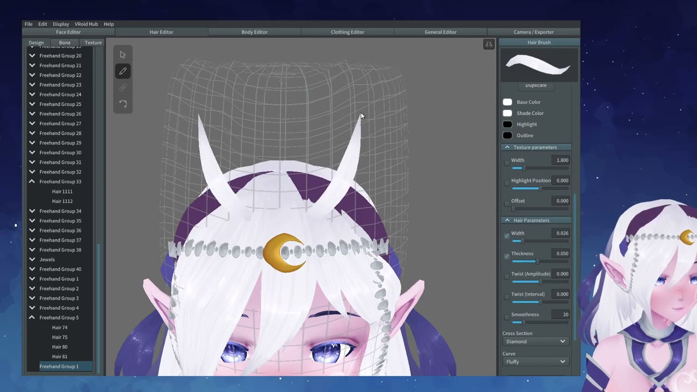
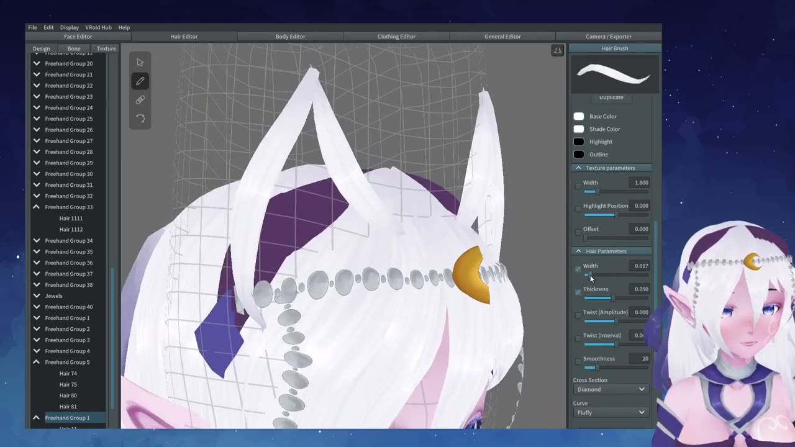
开画前，口播说把 mirror tool 打开，工具在上面。视口右上角有一个对称小图标，光标在那之前点过它。点开之后左右会一起长出来。笔刷用的是她已经有的白色材质，口播说用 existing textures。Hair Brush 预览是一弯白。颜色开关在下面：Base Color、Shade Color、Highlight、Outline。
这里有两根都叫 Width，不要拧错。Texture parameters 的 Width 是笔触贴图的宽，白笔这一帧是 1.800，Highlight Position 和 Offset 都是 0.000，她没去动。真正收细耳朵的是 Hair Parameters 的 Width：尖耳刚竖起来时是 0.026，补两侧绒毛时光标把它收到 0.017。旁边 Thickness 是 0.050，Twist (Amplitude)、Twist (Interval) 是 0，Smoothness 是 20，Cross Section 是 Diamond，Curve 是 Fluffy，这几项画面上没被拧。口播说绒毛可做可不做。
再开一组，从下往上把耳后补上
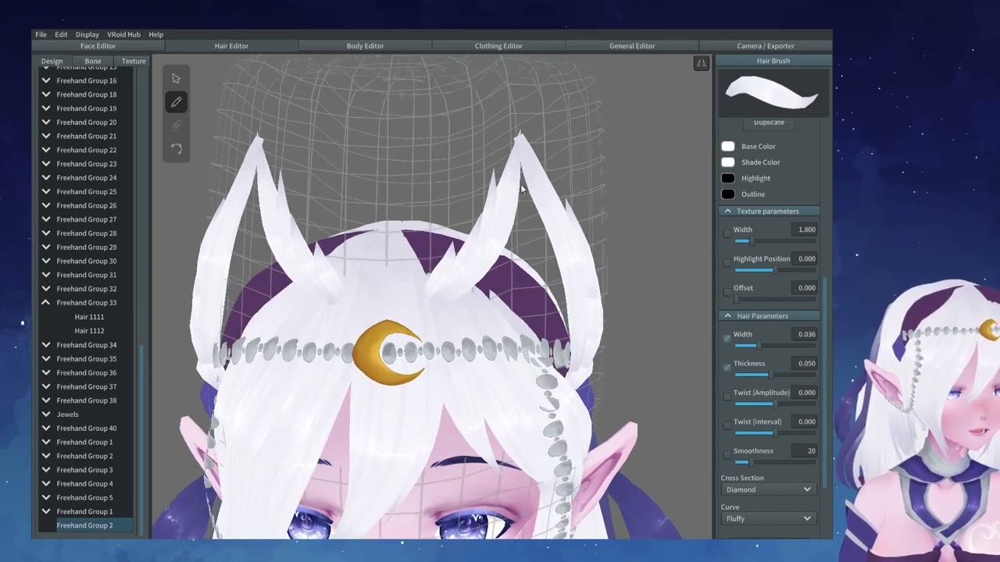
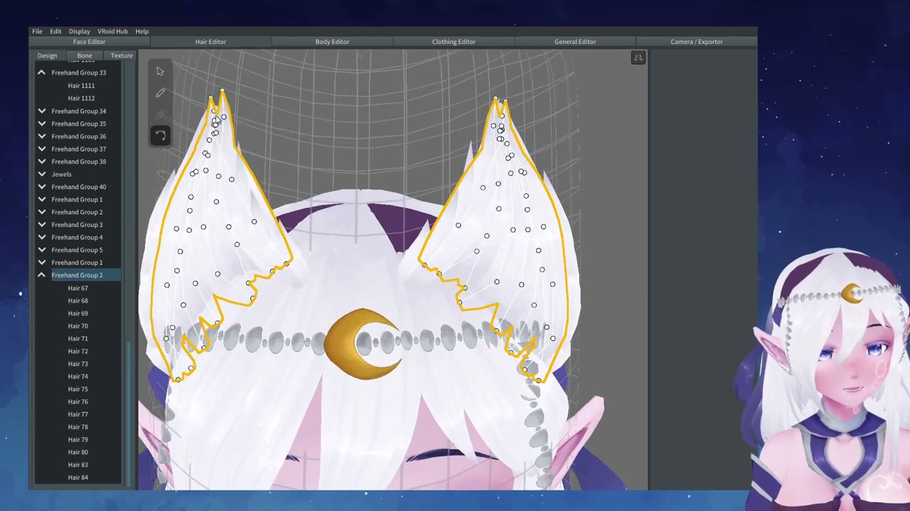
第一组还选着的时候，再点一次 Add Freehand Group，新的一组在列表里是 Freehand Group 2。口播说这一下先关掉 mirror，把组放到略靠后，再把 mirror 打开。画面上没看见图标亮灭的切换，只能看见结果：第二层贴在第一层后面，没有盖住正面那两只尖。接着把 Hair Parameters 的 Width 加大，这一帧是 0.036，用来填耳后的空。
口播要求笔从下往上画。从上往下画的话，后面绑骨时 Fixed Point 会从底部长出来，整只耳朵都会晃。这一步的静帧看不出每一笔的起笔，方向记成口播；后面垂耳那一笔能看见从下往上。
耳内用另一组，颜色用头发里已有的深色
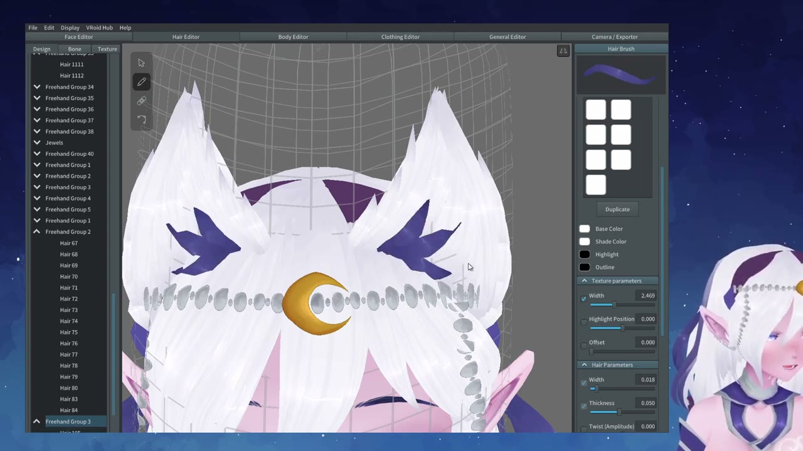
再开一组，列表里是 Freehand Group 3。口播说把这一组略往前拉：不要挡住耳朵正面，也不要缩到最后面。然后把毛宽收细再画一撮撮绒毛。这一帧 Width 是 0.018。笔刷预览换成深紫色，Texture parameters 的 Width 变成 2.469，那是贴图笔宽，不是发丝宽。口播说耳内用 blue，因为那也是头发里的颜色；画面上铺出来的是深紫，不是纯蓝。口播说耳内也可以自己另画，不一定照这个颜色。口播还说可以再开一组往前拉，加更多碎绒毛；画面上内侧已经是分开的几块，没有再出现新的滑杆。
骨头只让耳尖晃
一只耳朵勾成一组
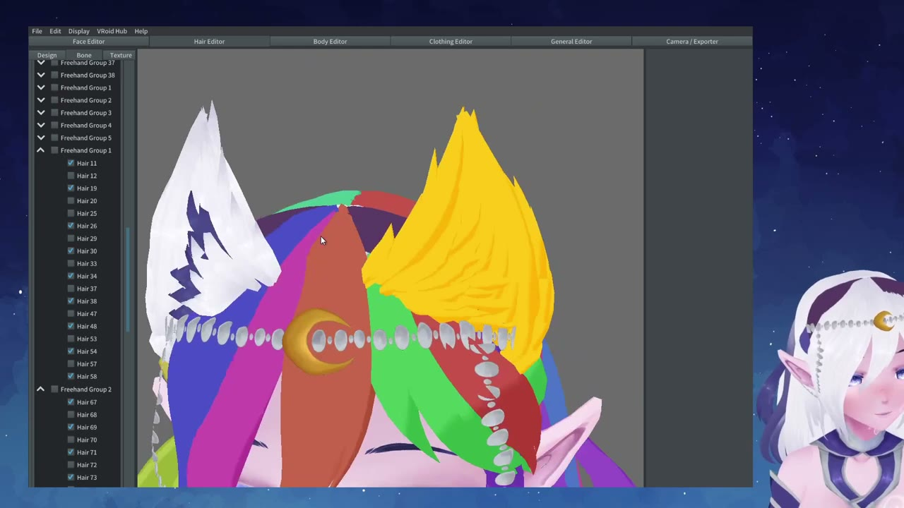
口播说形状满意了再加 bone。进 Bone，把一只耳朵上的发丝勾上。勾中的头发会变成同一种调试色，这一帧右边那只是黄的，左边那只还是白加紫，说明还没算进同一组。列表里能看见 Freehand Group 1 下面的 Hair 11、Hair 12 这些被勾上。口播说用 group selection 更不容易漏选；她说自己为了省事就在这个列表里勾。画面上没有另一个名叫 group selection 的按钮。
Fixed Point 抬高，别从耳根开始晃
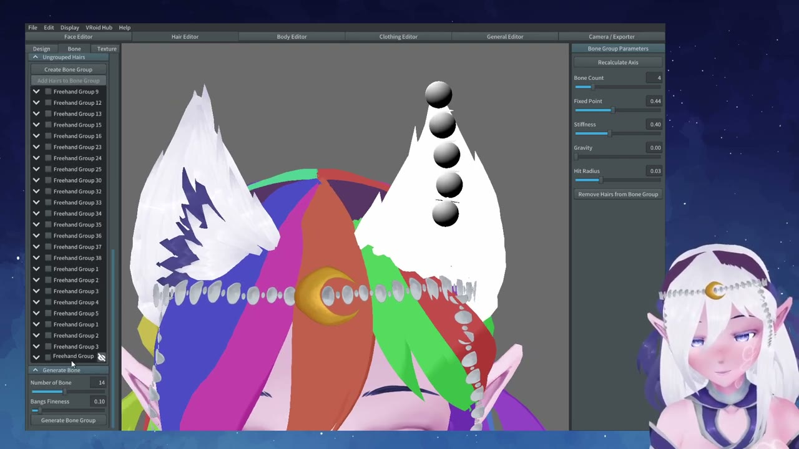
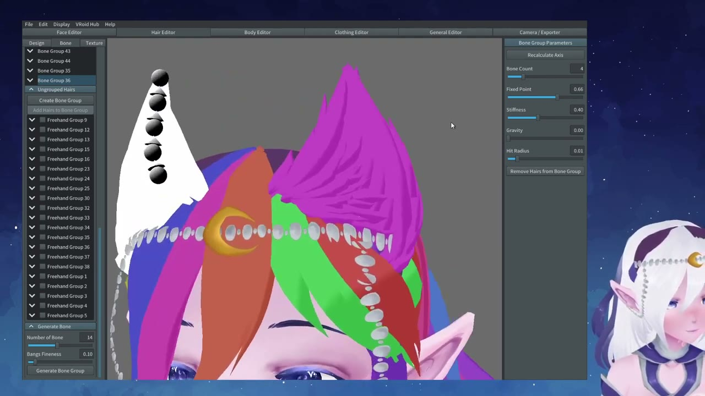
勾完点 Generate Bone Group。左侧 Generate Bone 下面还有 Number of Bone，读数 14，Bangs Fineness 读数 0.10，这两项她没有拧，也不是这只耳朵的骨数。耳朵这条链看右边：Bone Count 是 4。
要动的是 Fixed Point。口播说会动的是上面那一截，不要让它从下面开始晃，否则耳根也跟着甩。右耳这一组读数是 0.44，球还顺着耳朵排下来。换到另一只之后读数是 0.66，球堆在耳朵上半截。Stiffness 两帧都是 0.40，Gravity 是 0.00。Hit Radius 一帧 0.03、一帧 0.01，她没讲，不要照抄。面板上还有 Recalculate Axis 和 Remove Hairs from Bone Group。
另一只耳朵同样勾头发、再建一组、再抬 Fixed Point。口播说如果耳背是从上往下画的，Fixed Point 会从底部长出来，骨头就会带着整只耳朵动。猫耳这段没有把那条错误的链单独留下来；垂耳后面有一帧就是这个结果。
到 Camera / Exporter 里看它晃不晃
口播说去 camera / exporter 试耳朵。顶栏点 Camera / Exporter，左边点 Pose & Animation，右边下拉是 Female Animation，选一个会动的动作。这一帧是 Standby 2。列表里还能看见 Walking、Running、Jumping、Hey! 这些，她没有逐个讲。口播说可以按自己的口味让耳朵晃多一点或少一点；这一段没有再回去拧 Stiffness。
兔耳：外壳和内侧分成两组骨头
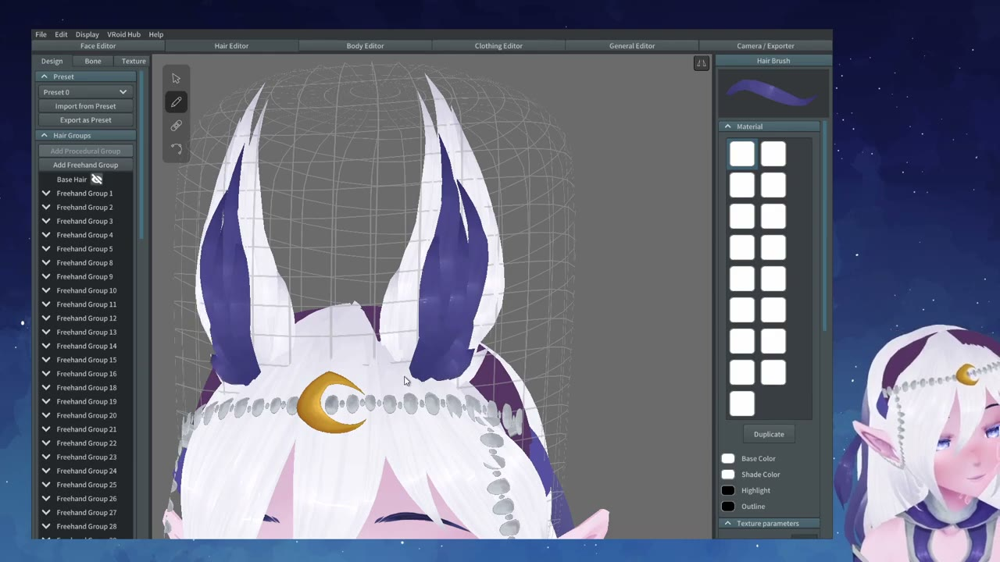
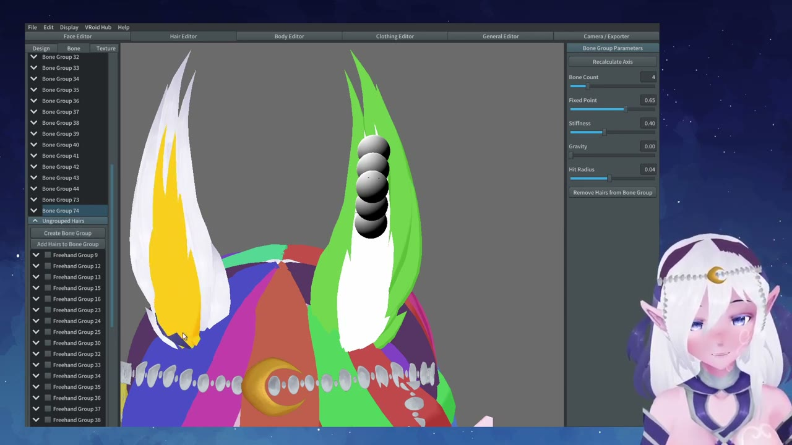
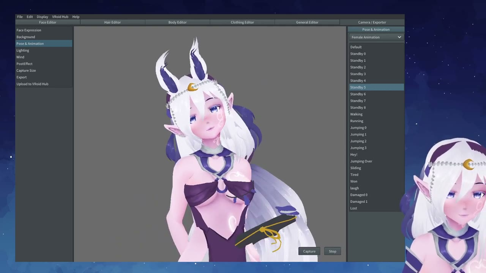
兔耳这一段口播很少，大部分是加速。外形仍是 Freehand：先长出两只高耳，再用深紫色铺内侧。和猫耳不同的是绑骨。口播说可以只选不是正面的那些头发，先给它们一组 bone；再给耳朵内侧单独一组。两组分开，晃的时候才不会粘成一片。这一帧绿色外壳上有球，同一只耳朵里白、黄的内侧还没有球。Fixed Point 是 0.65，Bone Count 仍是 4。口播说 Stiffness 之类都可以改，她选择不改；画面上 Stiffness 停在 0.40，光标不在那根滑杆上。
再回 Camera / Exporter 播一个会动的动作，这一帧是 Standby 5，兔耳留在头上。腰侧的黄色带子飞开了。口播说别管配饰，那是因为模型之前在 Unity 里改过。视频里没有打开 Unity。
一上一下：关掉对称，左右分开画
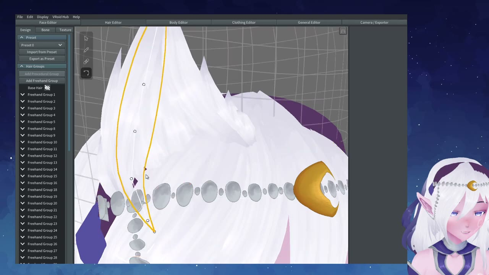
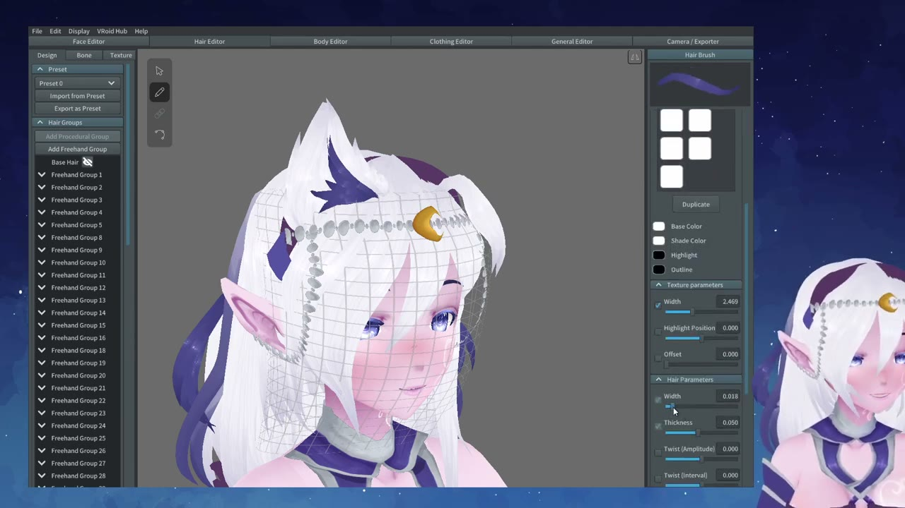
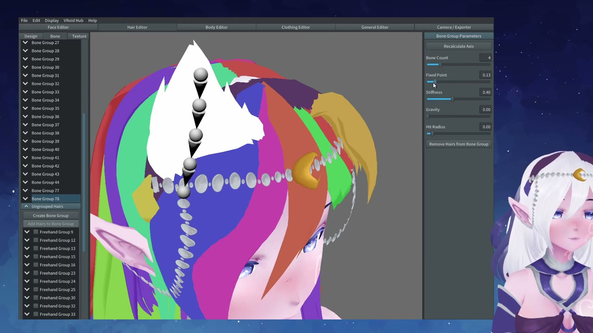
口播说这一对是一只朝上、一只朝下，做的时候不要开 mirror，左右必须分开画。先把耳朵从脑袋旁边甩出去，再让它往头这边弯回来，免得发丝飞出头皮。口播说按住 Shift 再拖可以转模型，方便看局部；键盘没有出现在画面上，只能看见她把视口转到了侧面。
这一笔的黄线从发带附近往上走，下端还留在下面，符合前面说的从下往上。立起来的那只和垂下去的那只不对称，所以对称确实是关的。耳内再铺一次深色，Hair Parameters 的 Width 收到 0.018，光标在这根上。Texture parameters 的 2.469 仍是笔触宽。
绑骨还是 Generate Bone Group，再看 Fixed Point。这一帧链画反了：球从耳尖一直掉过发带，落到刘海上，Fixed Point 只有 0.13，光标停在这根滑杆上。口播说自己大概是从上往下画的，不是从下往上，所以会这样；她要把这一根从 bone group 里拿掉。拿掉用的就是面板底部的 Remove Hairs from Bone Group。这一帧还没拿掉。Stiffness 仍是 0.40，Gravity 是 0.00。口播说到这里就能看见它会动，后面没有再改别的参数。